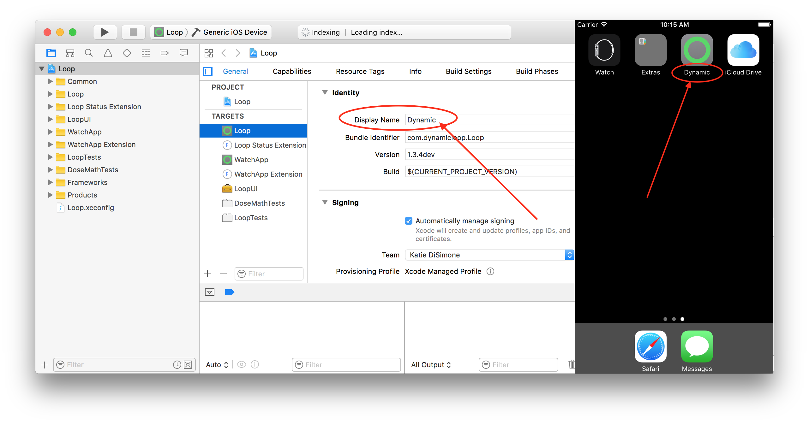

How to Update Loop⌁
When a new version of Loop is released, you can click HERE to read what features or fixes were a part of the new release. If you decide you'd like to update to the new version, your upgrade process will depend on how you initially installed Loop.
Update OS X and Xcode before updating Loop
Between Loop app builds, there's a high liklihood that Apple has updated one or more of the systems involved in your Loop app; your Apple Developer license agreement, your iPhone's iOS, your computer's OS X, your Xcode app, and/or your Apple Watch's OS. If you don't install the updates, you will likely run into build problems. You can check for OS X and Xcode updates using the App Store link under the apple logo in your computer display's upper left corner.
* Check your Apple developer account and accept any updated license agreements.
* Update to Sierra OS X on your Apple (El Capitan OS X is not compatible)
* Update your Xcode app to at least v8.3
* Update your iPhone (iOS 10.3.3) and Apple Watch OS (v 3.2.3)
You will also need to update your carthage installation to version 0.24.0. You can check your carthage version by opening Terminal app (found in Applications folder, and then the Utilities subfolder) and run this command carthage version. If the returned version is 0.18.1, then download the updated version here and install it just like you did originally. If you have homebrew installed, you could instead use brew carthage upgrade as an alternative way of updating carthage.
You have two options when building a new Loop app:
- Update your existing app, or
- Build a separate, second Loop app.
Update your old Loop app⌁
You will want to choose this option if you are fairly comfortable with the new features of the new Loop version. Also, if you really don't want to input your Loop app configurations and settings again, this will preserve your settings (such as your basal rates, pump serial number, NS info, Dexcom account login, etc).
-
First you will need to download the current Loop version's zip file HERE (for master branch) or HERE (for dev branch)
-
Follow the guide for installation as you did before, beginning HERE to navigate to your new source code folder in the Downloads folder.
-
When you've opened the project in Xcode, choose
Productfrom the Xcode top menu and then selectClean. This will help clean out any legacy issues from previous builds. -
Use the same MAIN_APP_BUNDLE_IDENTIFIER as you used in the first installation. If you can't remember it, you can open your old Loop folder in Downloads on your computer and check. Alternatively, open your Loop settings, open the Issue Report and look for a line titled
appGroupName. If you use a different MAIN_APP_BUNDLE_IDENTIFIER, your Loop app will automatically build as a separate, second Loop app as described below.

-
Add or redo any customizations as desired. These will not be carried over automatically from the old app.
-
Sign all the targets and rebuild.
Build a separate, second Loop app⌁
This method is appropriate if you are testing out dev features or unsure that you want to fully commit to the new Loop version. This will allow you to save the older version of your Loop app on the iPhone while you test out the new version. You will have to input all your settings and configurations again for the second (new) Loop app. If you eventually decide you prefer one Loop version, you can simply long-click and delete the unused app.
Only one Loop app can be open at a time
If you have two Loop apps installed on your iPhone, remember only one of them can be open and running at any given time. So, double-tap the home button and upswipe on the unused Loop app to close it before using the other version.
-
First you will need to download the current Loop version's zip file HERE (for master branch) or HERE (for dev branch)
-
Follow the guide for installation as you did before, beginning HERE to navigate to your new source code folder in the Downloads folder.
-
When you've opened the project in Xcode, choose
Productfrom the Xcode top menu and then selectClean. This will help clean out any legacy issues from previous builds. -
Use a different MAIN_APP_BUNDLE_IDENTIFIER than you used in the first installation.
-
Customization of the second Loop app's display name, and potentially the logo, is a good idea if you have more than one version of Loop app installed on your iPhone. The display name you input here will also be displayed as the Nightscout site's Loop pill.

-
Add or redo any customizations as desired. These will not be carried over automatically from the old app.
-
Sign all the targets and rebuild.
Xcode Source Control and GitHub git⌁
If you used git to locally clone your Loop source code, you will want to cd into your Loop repository on your local computer and git pull https://github.com/LoopKit/Loop.git to update your Loop repository. Then you can navigate to the Loop.xcodeproj and update as described above.